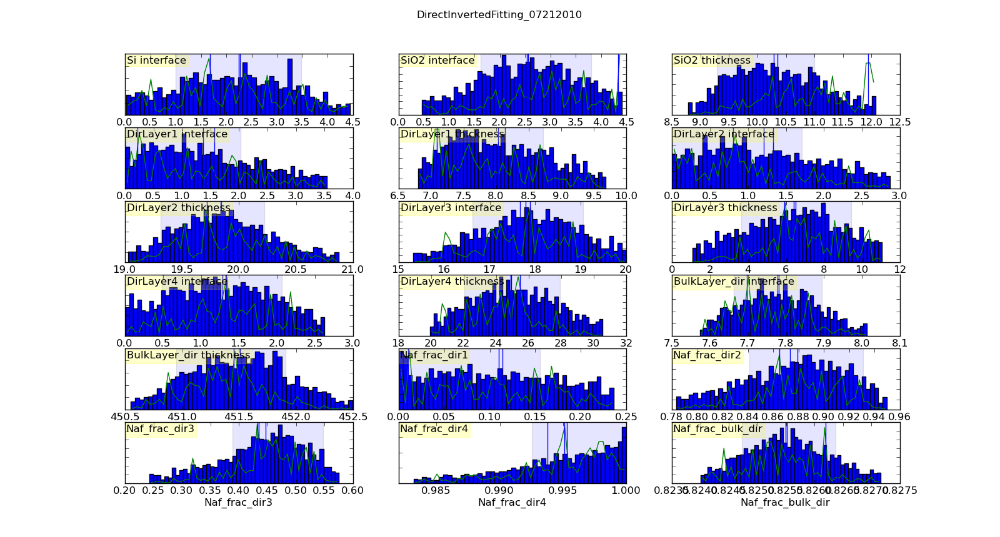
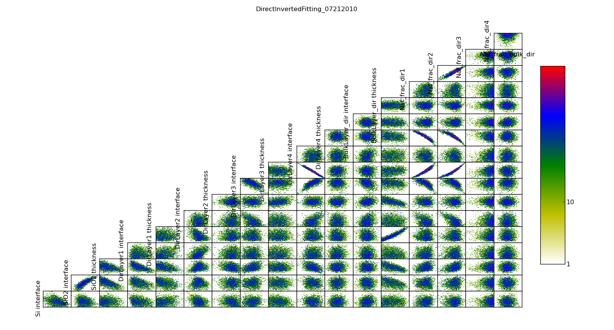
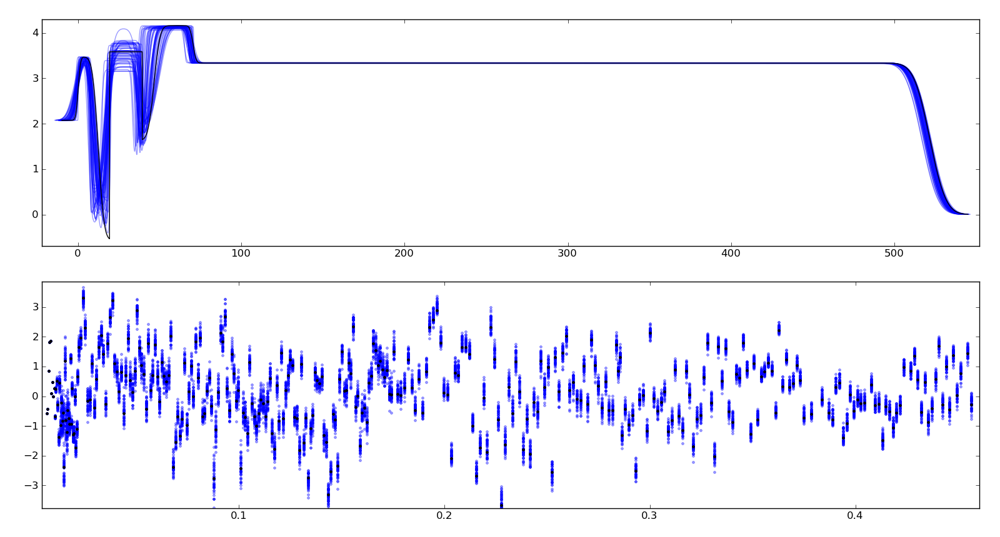

Fitting¶
Obtaining a good fit depends foremost on having the correct model to fit.
Too many layers, too few layers, too limited fit ranges, too open fit ranges, all of these can make fitting difficult. For example, forgetting the SiOx layer on the silicon substrate will distort the model of a polymer film.
Even with the correct model, there are systematic errors to address
(see _data_guide). A warped sample can lead to broader resolution than
expected near the critical edge, and sample_broadening=value must be
specified when loading the data. Small errors in alignment of the sample or
the slits will move the measured critical edge, and so probe.theta_offset
may need to be fitted. Points near the critical edge are difficult to
compute correctly with resolution because the reflectivity varies so quickly.
Using refl1d.probe.Probe.critical_edge(), the density of the
points used to compute the resolution near the critical edge can be
increased. For thick samples the resolution will integrate over
multiple Kissig fringes, and refl1d.probe.Probe.over_sample()
will be needed to average across them and avoid aliasing effects.
Quick Fit¶
While generating an appropriate model, you will want to perform a number of quick fits. The Nelder-Mead simplex algorithm (fit=amoeba) works well for this. You will want to run it with steps between 1000 and 3000 so the algorithm has a chance to converge. Restarting a number of times (somewhere between 3 and 100) gives a reasonably thorough search of the fit space. From the graphical user interface (refl_gui), using starts=1 and clicking the fit button to improve the fit as needed works pretty well. From the command line interface (refl_cli), the command line will be something like:
refl1d --fit=amoeba --steps=1000 --starts=20 --parallel model.py --store=T1
The command line result can be improved by using the previous fit value as the starting point for the next fit:
refl1d --fit=amoeba --steps=1000 --starts=20 --parallel model.py --store=T1 --pars=T1/model.par
Differential evolution (fit=de) and random lines (fit=rl) are alternatives to amoeba, perhaps a little more likely to find the global minimum but somewhat slower. These are population based algorithms in which several points from the current population are selected, and based on their position and value, a new point is generated. The population is specified as a multiplier on the number of parameters in the model, so for example an 8 parameter model with DE’s default population (pop=10) would create 80 points each generation. Random lines with a large population is fast but is not good at finding isolated minima away from the general trend, so its population defaults to pop=0.5. These algorithms can be called from the command line as follows:
refl1d --fit=de --steps=3000 --parallel model.py --store=T1
refl1d --fit=rl --steps=3000 --starts=200 --reset --parellel model.py --store=T1
Of course, –pars can be used to start from a previously completed fit.
Uncertainty Analysis¶
More important than the optimal value of the parameters is an estimate of the uncertainty in those values. By casting our problem as the likelihood of seeing the data given the model, we not only give ourselves the ability to incorporate prior information into the fit systematically, but we also give ourselves a strong foundation for assessing the uncertainty of the parameters.
Uncertainty analysis is performed using DREAM (fit=dream). This is a Markov chain Monte Carlo (MCMC) method with a differential evolution step generator. Like simulated annealing, the MCMC explores the space using a random walk, always accepting a better point, but sometimes accepting a worse point depending on how much worse it is.
DREAM can be started with a variety of initial populations. The random population (init=random) distributes the initial points using a uniform distribution across the space of the parameters. Latin hypersquares (init=lhs) improves on random by making sure that there is on value for each subrange of every variable. The covariance population (init=cov) selects points from the uncertainty ellipse computed from the derivative at the initial point. This method will fail if the fitting parameters are highly correlated and the covariance matrix is singular. The epsilon ball population (init=eps) starts DREAM from a tiny region near the initial point and lets it expand from there. It can be useful to start with an epsilon ball from the previous best point when DREAM fails to converge using a more diverse initial population.
The Markov chain will take time to converge on a stable population. This burn in time needs to be specified at the start of the analysis. After burn, DREAM will collect all points visited for N iterations of the algorithm. If the burn time was long enough, the resulting points can be used to estimate uncertainty on parameters.
A common command line for running DREAM is:
refl1d --fit=dream --burn=1000 --steps=1000 --init=cov --parallel --pars=T1/model.par model.py --store=T2
The file T1/model.err contains a table showing for each
parameter the mean(std), median and best values, and the 68% and 95%
credible intervals. The mean and standard deviation are computed from
all the samples in the returned distribution. These statistics are not
robust: if the Markov process has not yet converged, then outliers will
significantly distort the reported values. Standard deviation is
reported in compact notation, with the two digits in parentheses
representing uncertainty in the last two digits of the mean. Thus, for
example,
{kind=link}

Histogramming the set of points visited will gives a picture of the probability density function for each parameter. This histogram is generated automatically and saved in T1/model-var.png. The histogram range represents the 95% credible interval, and the shaded region represents the 68% credible interval. The green line shows the highest probability observed given that the parameter value is restricted to that bin of the histogram. With enough samples, this will correspond to the maximum likelihood value of the function given that one parameter is restricted to that bin. In practice, the analysis has converged when the green line follows the general shape of the histogram.
{kind=link}

The correlation plots show that the parameters are not uniquely determined from the data. For example, the thickness of lamellae 3 and 4 are strongly anti-correlated, yielding a 95% CI of about 1 nm for each compared to the bulk nafion thickness CI of 0.2 nm. Summing lamellae thickness in the sampled points, we see the overall lamellae thickness has a CI of about 0.3 nm. The correlation plot is saved in T1/model-corr.png.
{kind=link}

To assure ourselves that the uncertainties produced by DREAM do indeed correspond to the underlying uncertainty in the model, we perform a Monte Carlo forward uncertainty analysis by selecting 50 samples from the computed posterior distribution, computing the corresponding reflectivity and calculating the normalized residuals. Assuming that our measurement uncertainties are approximately normally distributed, approximately 68% of the normalized residuals should be within +/- 1 of the residual for the best model, and 98% should be within +/- 2. Note that our best fit does not capture all the details of the data, and the underlying systematic bias is not included in the uncertainty estimates.
Plotting the profiles generated from the above sampling method, aligning them such that the cross correlation with the best profile is maximized, we see that the precise details of the lamellae are uncertain but the total thickness of the lamellae structure is well determined. Bayesian analysis can also be used to determine relative likelihood of different number of layers, but we have not yet performed this analysis. This plot is stored in T1/model-errors.png.
The trace plot, T1/model-trace.png, shows the mixing properties of the first fitting parameter. If the Markov process is well behaved, the trace plot will show a lot of mixing. If it is ill behaved, and each chain is stuck in its own separate local minimum, then distinct lines will be visible in this plot.
The convergence plot, T1/model-logp.png, shows the log likelihood values for each member of the population. When the Markov process has converged, this plot will be flat with no distinct lines visible. If it shows a general upward sweep, then the burn time was not sufficient, and the analysis should be restarted. The ability to continue to burn from the current population is not yet implemented.
Given sufficient burn time, points in the search space will be visited with probability proportional to the goodness of fit. It can be difficult to determine the correct amount of burn time in advance. If burn is not long enough, then the population of log likelihood values will show an upward sweep. Similarly, if steps is insufficient, th likelihood observed as a function of parameter value will be sparsely sampled, and the maximum likelihood curve will not match the posterior probability histogram. To correct these issues, the DREAM analysis can be extended using the –resume option. Assume the previous run completed with Markov chain convergence achieved at step 500. The following command line will generate an additional 600 steps so that the posterior sample size is 1600, then run an additional 500 steps of burn to remove the intial upward sweep in the log likelihood plot:
refl1d --fit=dream --burn=500 --steps=1600 --parallel --resume=T2 --store=T3
The results are stored in directory T3.
Just because all the plots are well behaved does not mean that the Markov process has converged on the best result. It is practically impossible to rule out a deep minimum with a narrow acceptance region in an otherwise unpromising part of the search space.
In order to assess the DREAM algorithm for suitability for reflectometry fitting we did a number of tests. Given that the fit surface is multimodal, we need to know that the uncertainty analysis can return multiple modes. Because the fit problems may also be ill-conditioned, with strong correlations or anti-correlations between some parameters, the uncertainty analysis needs to be able to correctly indicate that the correlations exist. Simple Metropolis-Hastings sampling does not work well in these conditions, but DREAM is able to handle them.
Using the posterior distribution¶
You can load the DREAM output population an perform uncertainty analysis operations after the fact:
$ ipython -pylab
from bumps.dream.state import load_state
state = load_state(modelname)
state.mark_outliers() # ignore outlier chains
state.show() # Plot statistics
You can restrict a variable to a certain range when doing plots. For example, to restrict the third parameter to [0.8-1.0] and the fifth to [0.2-0.4]:
from bumps.dream import views
selection={2: (0.8,1.0), 4:(0.2,0.4),...}
views.plot_vars(state, selection=selection)
views.plot_corrmatrix(state, selection=selection)
You can also add derived variables using a function to generate the derived variable. For example, to add a parameter which is p[0]+p[1] use:
state.derive_vars(lambda p: p[0]+p[1], labels=["x+y"])
You can generate multiple derived parameters at a time with a function that returns a sequence:
state.derive_vars(lambda p: (p[0]*p[1],p[0]-p[1]), labels=["x*y","x-y"])
These new parameters will show up in your plots:
state.show()
The plotting code is somewhat complicated, and matplotlib doesn’t have a good way of changing plots interactively. If you are running directly from the source tree, you can modify the dream plotting libraries as you need for a one-off plot, the replot the graph:
# ... after changing code in bumps/dream/views or bumps/dream/corrplot
reload(bumps.dream.views)
reload(bumps.dream.corrplot)
state.show()
Be sure to restore the original versions when you are done. If the change is so good that everyone should use it, be sure to feed it back to the community via https://github.com/reflectometry/refl1d.
Reporting results¶
As with any parametric modeling technique, you cannot say that the model is correct and has certain parameter value, only that the observed data is consistent with the model and the given parameter values. There may be other models within the parameter search space that are equally consistent, but which were not discovered by Refl1D, particularly if you are forced to use –init=eps to achieve convergence. This is true even for models which exhibit good convergence:
the marginal maximum likelihood (the green line) follows the marginal probability density (the blue line)
the log likelihood function is flat, not sweeping upward
the individual parameter traces exhibit good mixing
the marginal probability density is unimodal and roughly normal
the joint probabilities show no correlation structure
the residuals plot shows no structure
The following blurb can be used as a description of the analysis method when reporting your results:
Refl1D[1] was used to model the reflectivity data. The sample depth profile is represented as a series of slabs of varying scattering length density and thickness with gaussian interfaces between them. Freeform sections of the profile are modeled using monotonic splines. Reflectivity is computed using the Abeles optical matrix method, with interfacial effects computed by the method of Nevot and Croce or by approximating the interfaces by a series of thin slabs. Refl1d supports simultaneous refinement of multiple reflectivity data sets with constraints between the models.
Refl1D uses a Bayesian approach to determine the uncertainty in the model parameters. By representing the problem as the likelihood of observing the measured reflectivity curve given a particular choice of parameters, Refl1D can use Markov Chain Monte Carlo (MCMC) methods[2] to draw a random sample from the joint parameter probability distribution. This sample can then used to estimate the probability distribution for each individual parameter.
[1] Kienzle P. A., Krycka J., A., and Patel, N. Refl1D: Interactive depth profile modeler. http://refl1d.readthedocs.org
[2] Vrugt J. A., ter Braak C. J. F., Diks C. G. H., Higdon D., Robinson B. A., and Hyman J. M. Accelerating Markov chain Monte Carlo simulation by differential evolution with self-adaptive randomized subspace sampling, Int. J. Nonlin. Sci. Num., 10, 271–288, 2009.
If you are reporting maximum likelihood and credible intervals:
The parameter values reported are the those from the model which best fits the data, with uncertainty determined from the range of parameter values which covers 68% of the sample set. This corresponds to the
uncertainty level if the sample set were normally distributed.
If you are reporting mean and standard deviation:
The reported parameter values are computed from the mean and standard deviation of the sample set. This corresponds to the best fitting normal distribition to marginal probability distribution for the parameter.
There are caveats to reporting mean and standard deviation. The technique is not robust. If burn-in is insufficient, if the distribution is multi-modal, or if the distribution has long tails, then the reported mean may correspond to a bad fit, and the standard deviation can be huge. [We should confirm this by modeling a cauchy distribution]
Publication Graphics¶
The matplotlib package is capable of producing publication quality graphics for your models and fit results, but it requires you to write scripts to get the control that you need. These scripts can be run from the refl1d application by first loading the model and the fit results then accessing their data directly to produce the plots that you need.
The model file (called plot.py in this example) will start with the following:
import sys
import os.path
from bumps.fitproblem import load_problem
from bumps.cli import load_best
model, store = sys.argv[1:3]
problem = load_problem(model)
load_best(problem, os.path.join(store, model[:-3]+".par"))
chisq = problem.chisq
print("chisq %g"%chisq)
Assuming your model script is in model.py and you have run a fit with –store=X5, you can run this file using:
$ refl1d -p plot.py model.py X5
Now model.py is loaded and the best fit parameters are set.
To produce plots, you will need access to the data and the theory. This
can be complex depending on how many models you are fitting and how many
datasets there are per model. For refl1d.bumps_interface.fitproblem.FitProblem
models, the refl1d.experiment.Experiment object is referenced
by problem.fitness. For refl1d.bumps_interface.fitproblem.FitProblem models,
you need to use problem.models[k].fitness to access the experiment for
model k. Profiles and reflectivity theory are returned from methods
in experiment. The refl1d.probe.Probe data for the experiment is
referenced by experiment.probe. This will have attributes for Q, dQ,
R, dR, T, dT, and L, dL, as well as methods for plotting
the data. This is not quite so simple: the sample may be non uniform,
and composed of multiple samples for the same probe, and at the same time
the probe may be composed of independent measurements kept separate so that
you can fit alignment angle and overall intensity. Magnetism adds
another level of complexity, with extra profiles associated with each
sample and separate reflectivities for the different spin states.
How does this work in practice? Consider a simple model such as nifilm-fit from the example directory. We can access the parts by extending plot.py as follows:
experiment = problem.fitness
z,rho,irho = experiment.smooth_profile(dz=0.2)
# ... insert profile plotting code here ...
QR = experiment.reflectivity()
for p,th in self.parts(QR):
Q,dQ,R,dR,theory = p.Q, p.dQ, p.R, p.dR, th[1]
# ... insert reflectivity plotting code here ...
Next we can reload the the error sample data from the DREAM MCMC sequence:
from bumps.dream.state import load_state
from bumps.errplot import calc_errors_from_state
from refl1d.uncertainty import align_profiles
state = load_state(os.path.join(store, model[:-3]))
state.mark_outliers()
# ... insert correlation plots, etc. here ...
profiles,slabs,Q,residuals = calc_errors_from_state(problem, state)
aligned_profiles = align_profiles(profiles, slabs, 2.5)
# ... insert profile and residuals uncertainty plots here ...
The function refl1d.uncertainty.calc_errors() provides details on the data
structures for profiles, Q and residuals. Look at the source in
refl1d/errors.py to see how this data is used to produce the error plots
with _profiles_overplot, _profiles_contour, _residuals_overplot and
_residuals_contour. The source is available from:
Putting the pieces together, here is a skeleton for a specialized plotting script:
import sys
import os.path
from bumps.fitproblem import load_problem
from bumps.cli import load_best
model, store = sys.argv[1:3]
problem = load_problem(model)
load_best(problem, os.path.join(store, model[:-3]+".par"))
print("chisq %s"%problem.chisq_str())
chisq = problem.chisq()
# Assume for this example there is a single measurement in this problem.
# Otherwise, you will need to use M.fitness for M in problem.models.
experiment = problem.fitness
# We are going to assume that we have a simple experiment with only one
# reflectivity profile, and only one dataset associated with the profile.
# The details for more complicated scenarios are in experiment.plot_profile
# and experiment.plot_reflectivity.
z, rho, irho = experiment.smooth_profile(dz=0.2)
pylab.figure()
pylab.subplot(211)
pylab.plot(z, rho, label='SLD profile')
Qtheory, Rtheory = experiment.reflectivity()
probe = experiment.probe
Q, R, dR = probe.Q, probe.R, probe.dR
pylab.subplot(212)
pylab.semilogy(Qtheory, Rtheory, label='theory')
pylab.errorbar(Q, R, yerr=dR, label='data')
if 0: # Loading errors is expensive; may not want to do so all the time.
state = load_state(os.path.join(store, model[:-3]))
state.mark_outliers()
# ... insert correlation plots, etc. here ...
profiles,slabs,Q,residuals = calc_errors_from_state(problem, state)
aligned_profiles = align_profiles(profiles, slabs, 2.5)
# ... insert profile and residuals uncertainty plots here ...
pylab.show()
raise Exception() # We are just plotting; don't run the model
For the common problem of generating profile error plots aligned on a particular interface, you can use the simpler align.py model:
from refl1d.names import * align_errors(model=””, store=””, align=’auto’)
If you are using the command line then you should be able to type the following at the command prompt to generate the plots:
$ refl1d align.py <model>.py <store> [<align>] [1|2|n]
If you are using the GUI, you will have to set model, store and align directly in align.py each time you run.
Align is either auto for the current behaviour, or it is an interface number. You can align on the center of a layer by adding 0.5 to the interface number. You can count interfaces from the surface by prefixing with R. For example, 0 is the substrate interface, R1 is the surface interface, 2.5 is the the middle of layer 2 above the substrate.
You can plot the profiles and residuals on one plot by setting plots to 1, on two separate plots by setting plots to 2, or each curve on its own plot by setting plots to n. Output is saved in <store>/<model>-err#.png.
Tough Problems¶
With the toughest fits, for example freeform models with many control points, parallel tempering (fit=pt) is the most promising algorithm. This implementation is an extension of DREAM. Whereas DREAM runs with a constant temperature, T=1, parallel tempering runs with multiple temperatures concurrently. The high temperature points are able to walk up steep hills in the search space, possibly crossing over into a neighbouring valley. The low temperature points agressively seek the nearest local minimum, rejecting any proposed point that is worse than the current. Differential evolution helps adapt the steps to the shape of the search space, increasing the chances that the random step will be a step in the right direction. The current implementation uses a fixed set of temperatures defaulting to Tmin=0.1 through Tmax=10 in nT=25 steps; future versions should adapt the temperature based on the fitting problem.
Parallel tempering is run like dream, but with optional temperature controls:
refl1d --fit=dream --burn=1000 --steps=1000 --init=cov --parallel --pars=T1/model.par model.py --store=T2
Parallel tempering does not yet generate the uncertainty plots provided by DREAM. The state is retained along the temperature for each point, but the code to generate histograms from points weighted by inverse temperature has not yet been written.
Command Line¶
The GUI version is slower because it frequently updates the graphs showing the best current fit.
Run multiple models overnight, starting one after the last is complete by creating a batch file (e.g., run.bat) with one line per model. Append the parameter –batch to the end of the command lines so the program doesn’t stop to show interactive graphs. You can view the fitted results in the GUI using:
refl1d --edit model.py --pars=T1/model.par
Other optimizers¶
There are several other optimizers that are included but aren’t frequently used.
BFGS (fit=newton) is a quasi-newton optimizer relying on numerical derivatives to find the nearest local minimum. Because the reflectometry problem often has correlated parameters, the resulting matrices can be ill-conditioned and the fit isn’t robust.
Particle swarm optimization (fit=ps) is another population based algorithm, but it does not appear to perform well for high dimensional problem spaces that frequently occur in reflectivity.
SNOBFIT (fit=snobfit) attempts to construct a locally quadratic model of the entire search space. While promising because it can begin to offer some guarantees that the search is complete given reasonable assumptions about the fitting surface, initial trials did not perform well and the algorithm has not yet been tuned to the reflectivity problem.
References¶
WH Press, BP Flannery, SA Teukolsky and WT Vetterling, Numerical Recipes in C, Cambridge University Press
I. Sahin (2011) Random Lines: A Novel Population Set-Based Evolutionary Global Optimization Algorithm. Lecture Notes in Computer Science, 2011, Volume 6621/2011, 97-107 DOI:10.1007/978-3-642-20407-4_9
Vrugt, J. A., ter Braak, C. J. F., Diks, C. G. H., Higdon, D., Robinson, B. A., and Hyman, J. M.:Accelerating Markov chain Monte Carlo simulation by differential evolution with self-adaptive randomized subspace sampling, Int. J. Nonlin. Sci. Num., 10, 271–288, 2009.
Kennedy, J.; Eberhart, R. (1995). “Particle Swarm Optimization”. Proceedings of IEEE International Conference on Neural Networks. IV. pp. 1942–1948. doi:10.1109/ICNN.1995.488968
Huyer and A. Neumaier, Snobfit - Stable Noisy Optimization by Branch and Fit, ACM Trans. Math. Software 35 (2008), Article 9.
Storn, R.: System Design by Constraint Adaptation and Differential Evolution, Technical Report TR-96-039, International Computer Science Institute (November 1996)
Swendsen RH and Wang JS (1986) Replica Monte Carlo simulation of spin glasses Physical Review Letters 57 : 2607-2609